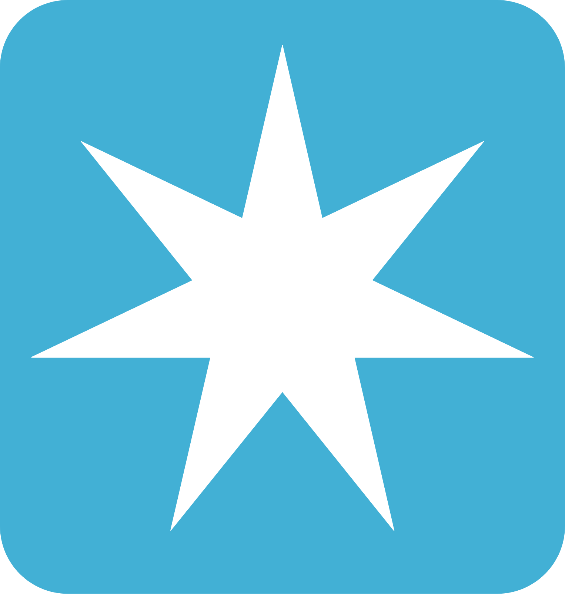
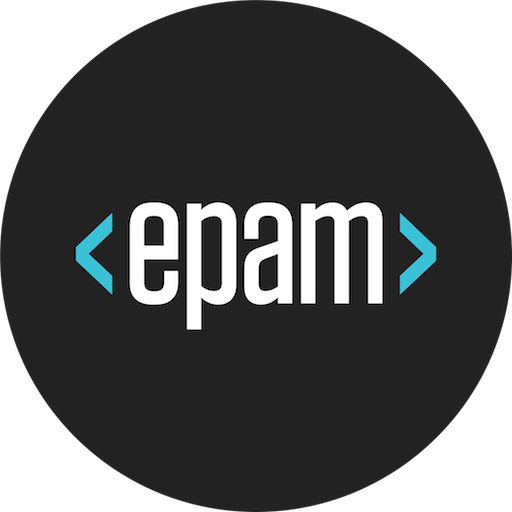
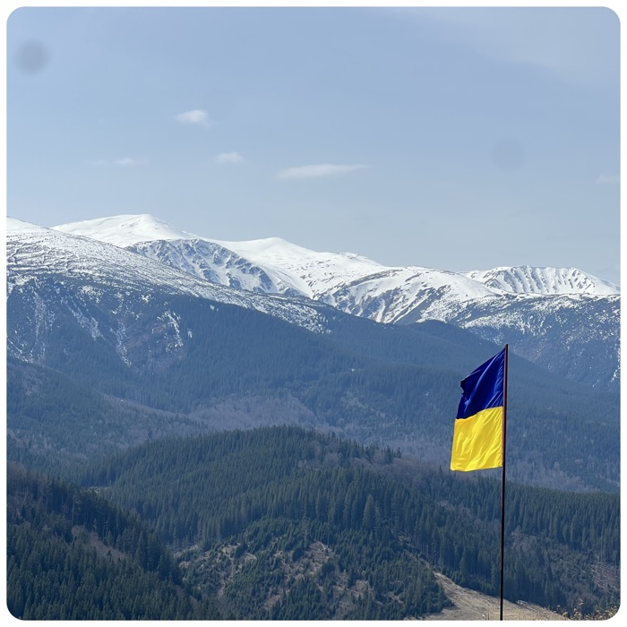
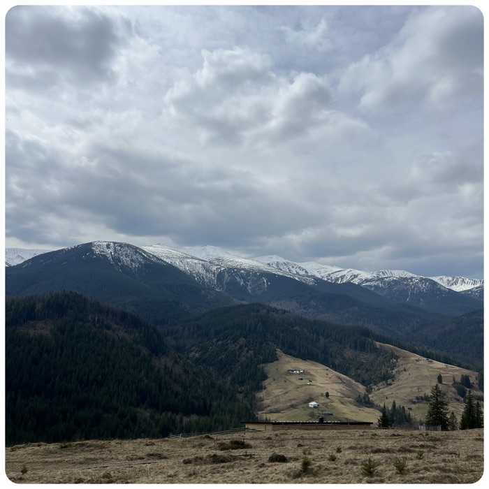
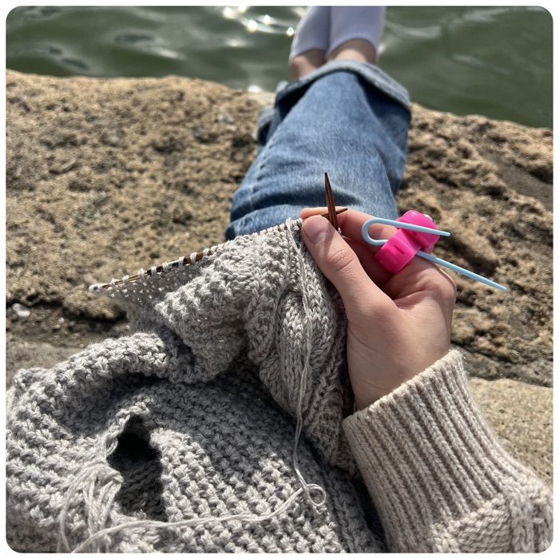
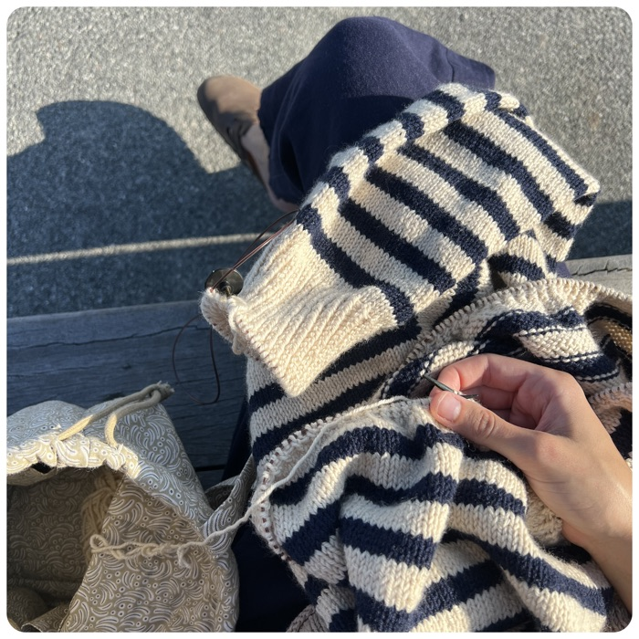

Career Journey

2025 — now
Senior UX Designer
A.P. Moller – Maersk · B2B SaaS
Leading design of the amendments module within Maersk's sales platform, exploring AI-assisted prototyping to speed up the feedback loop. Conducts user research and works closely with SMEs, product managers, tech leads, and platform architects to shape solutions.
2024 — 2025
Product Designer First Design Hire
Danelec · Maritime Tech
- Led the full redesign of the vessel performance web platform to improve usability
- Created a refreshed Design System with a frontend engineer, reducing hand-off time by 50%
- Built a user feedback loop through Customer Success teams and in-app feedback collection, increasing user-driven roadmap initiatives from 0 to 30%
2022 — 2024
Product Designer
Atobi · EdTech / Retail
- Increased mobile app adoption by 7% through gamified learning
- Introduced usability testing and design QA into the development cycle
- Led the design of a native content creation feature that replaced an external CRM and was widely adopted
- Built a Design System from scratch in collaboration with engineers, reducing hand-off time

2020 — 2022
Experience Designer
EPAM Systems · Tech Agency
- Redesigned marketplace for software solutions, which resulted in 25% increase of solution requests
- Guest lecturer at "Platea" design community events
- Contributed to "epamdesignkyiv" Telegram channel with over 1000 followers
2019 — 2020
Visual Aids Associate
PwC · Professional Services
- Designed pitch decks for internal consultants
- Managed team of 7 designers, assisted in communication with consultants
- Designed internal website for announcements
Outside of work


When in Ukraine
Hiking in Carpathians
When in Denmark
Training for my first 2 km swim


Wherever I am
Knitting comes along